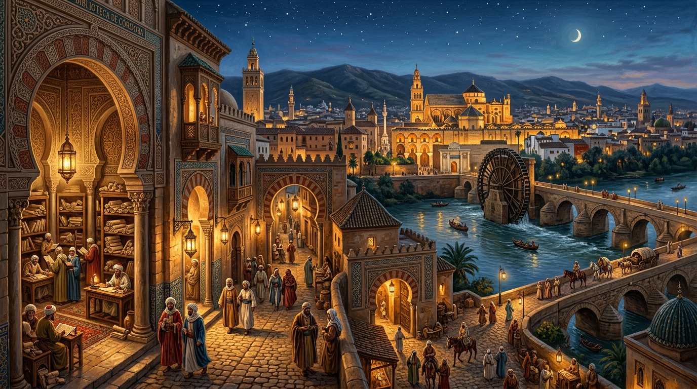

Disiplinlerarası Monografiler
Cerrahi, Astronomi, Rasyonalist Felsefe ve Hidrolik Mühendisliği üzerine 12 akademik monografi.
711–1492 Bilimsel, Felsefi ve Teknolojik Miras Korpusu

Kurtuba kütüphanelerinden Toledo tercüme mekteplerine, cerrahi enstrümanlardan evrensel usturlaplara uzanan 781 yıllık miras kütüphanesi.
Cerrahi, Astronomi, Rasyonalist Felsefe ve Hidrolik Mühendisliği üzerine 12 akademik monografi.